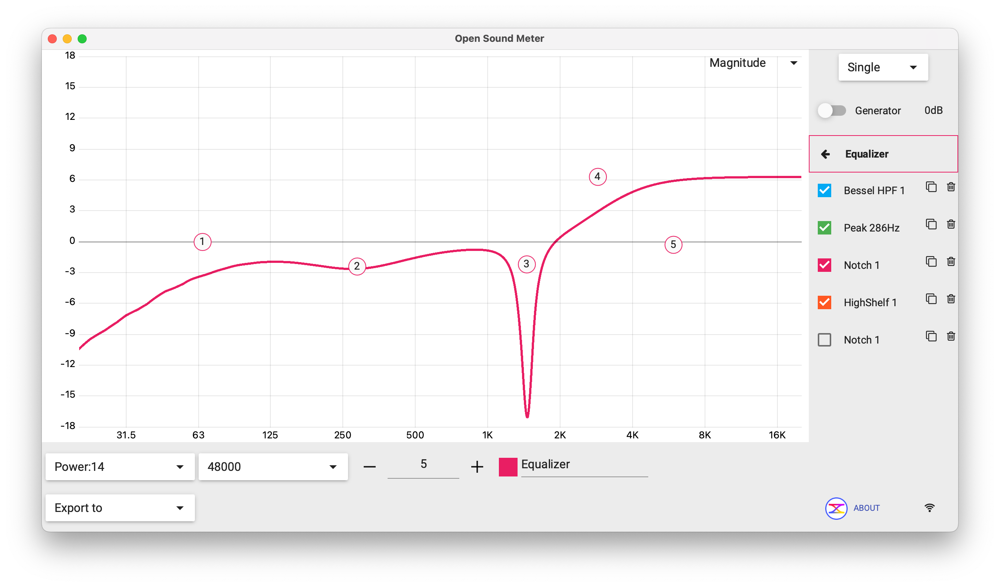
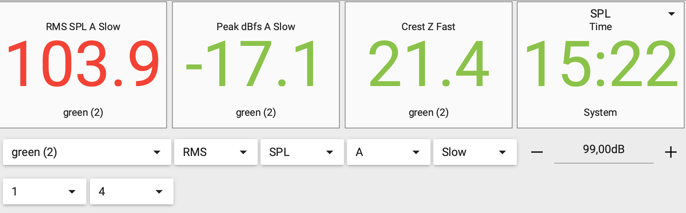
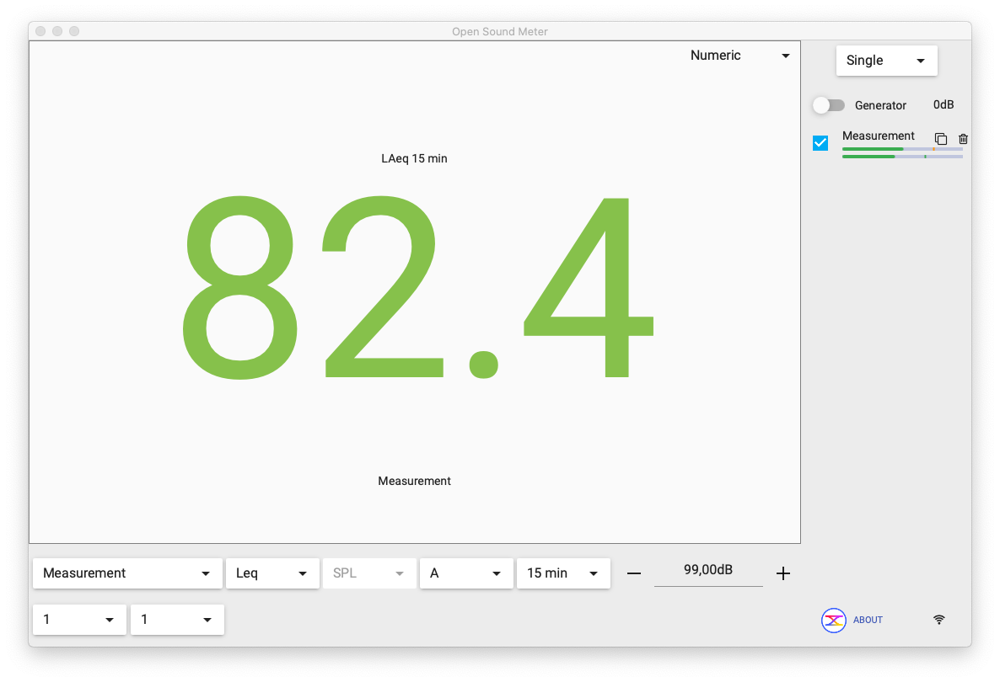
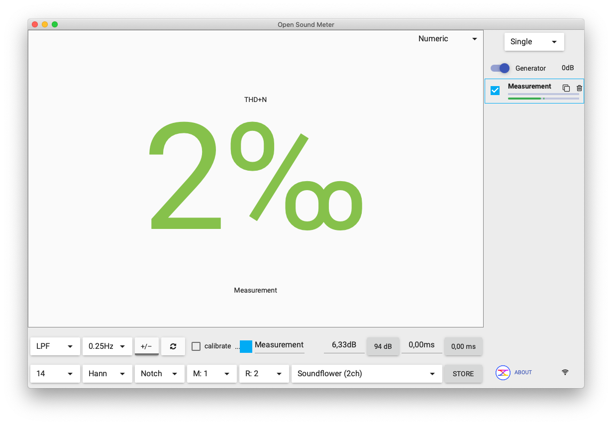

Além das views de gráfico que cobrimos na Página 3, o OSM tem três modos especiais: Equalizer para desenhar curvas de filtro virtualmente, SPL Meters para medir pressão sonora como um decibelímetro profissional, e Numeric para ver uma métrica em destaque (LAeq, THD+N).
O Equalizer: desenhar filtros virtualmente
O Equalizer não é o EQ que você usa para mudar o som da mesa — ele é um "simulador" de filtros dentro do OSM. Você desenha uma curva de equalização virtual com os tipos clássicos de filtro, e o OSM mostra como essa curva ficaria sobre a medição.

Tipos de filtro disponíveis
| Filtro | Para que serve |
|---|---|
| HPF (Bessel, Butterworth, Linkwitz) |
Filtro passa-alta — corta tudo abaixo de uma frequência. Usado para sub/top crossover, ou para "limpar" graves indesejados. |
| LPF | Filtro passa-baixa — corta tudo acima de uma frequência. Usado no canal do subwoofer. |
| Peak | Reforça ou corta uma faixa estreita em torno de uma frequência. É o EQ paramétrico clássico. |
| Notch | Corta uma frequência muito específica com Q muito alto. É o filtro anti-microfonia. |
| LowShelf | Reforça ou corta tudo abaixo de uma frequência (não corta — reforça em platô). |
| HighShelf | Reforça ou corta tudo acima de uma frequência. Usado para "abrir" agudos. |
| AllPass | Não muda magnitude, só muda fase. Usado em alinhamento de fase entre caixas. |
Por que isso é útil em igreja
Você desenha o EQ no OSM antes de aplicar no equalizador gráfico real ou no processador DSP — vê na curva de Magnitude se a correção vai ter o efeito esperado, sem mexer no sistema. Quando estiver satisfeito, você transcreve as frequências e ganhos para o equipamento real.
O botão Export to no canto inferior esquerdo exporta a configuração para alguns processadores compatíveis (Symetrix, dbx, etc).
SPL Meters: o decibelímetro do OSM
O modo SPL Meters transforma a tela do OSM num medidor profissional de pressão sonora. Você escolhe quantos campos quer ver na tela e configura cada um independentemente.

As métricas disponíveis
Para cada campo você escolhe:
- Fonte — qual medição usar (microfone ativo, stored, etc).
- Tipo — RMS (energia média), Peak (pico instantâneo), Crest (relação pico/RMS, indica dinâmica), Leq (nível equivalente integrado), Time (relógio).
- Unidade — SPL (dB acústico calibrado), dBfs (em relação ao full scale digital).
- Ponderação — A (curva A — peso para como o ouvido percebe), C (curva C — mais plana, comum em medições de evento), Z (sem ponderação).
- Integração — Fast (125 ms), Slow (1000 ms), Impulse. Slow é o padrão para medição de evento.
- Limites de cor — define em que valor o campo fica verde, amarelo, vermelho. Útil para olhar de longe e saber se está abaixo do limite legal.
Templos têm limites legais de pressão sonora (geralmente 85 dB(A) RMS Slow, dependendo do município). Use o SPL Meter em modo RMS SPL A Slow com limite vermelho em 85 dB. Durante eventos especiais (vigílias, congressos com banda completa), você vê na tela se está passando do limite — antes do vizinho ligar a denúncia.
Numeric mode: uma métrica em destaque
Numeric mode é parecido com SPL Meter mas mostra um número só ocupando a tela toda. Útil em laptop pequeno enquanto você está fazendo outra coisa — você vê o número de longe sem precisar focar.


Setup recomendado para uma visita
Durante uma visita técnica, vale ter dois OSM abertos ao mesmo tempo (ou alternar entre eles):
- OSM principal em modo Double com Magnitude + Phase — para alinhamento.
- OSM secundário em SPL Meter mostrando RMS SPL A Slow — para monitoramento de nível durante o culto.
Se for evento grande, o terceiro campo pode ser LAeq 15 min para você reportar ao responsável da igreja o nível médio do evento.
O essencial pra reter desta página
- Equalizer desenha filtros virtuais sobre a medição — você testa a EQ no OSM antes de aplicar no equipamento real.
- Tipos clássicos de filtro estão todos disponíveis: HPF, LPF, Peak, Notch, Shelves, AllPass.
- SPL Meters transforma o OSM em decibelímetro profissional. RMS SPL A Slow é o setup padrão para evento.
- Numeric mostra uma métrica só em destaque — bom para monitorar de longe.
- Use limites de cor (verde/amarelo/vermelho) para saber "estou dentro do limite legal?" sem precisar ler o número.